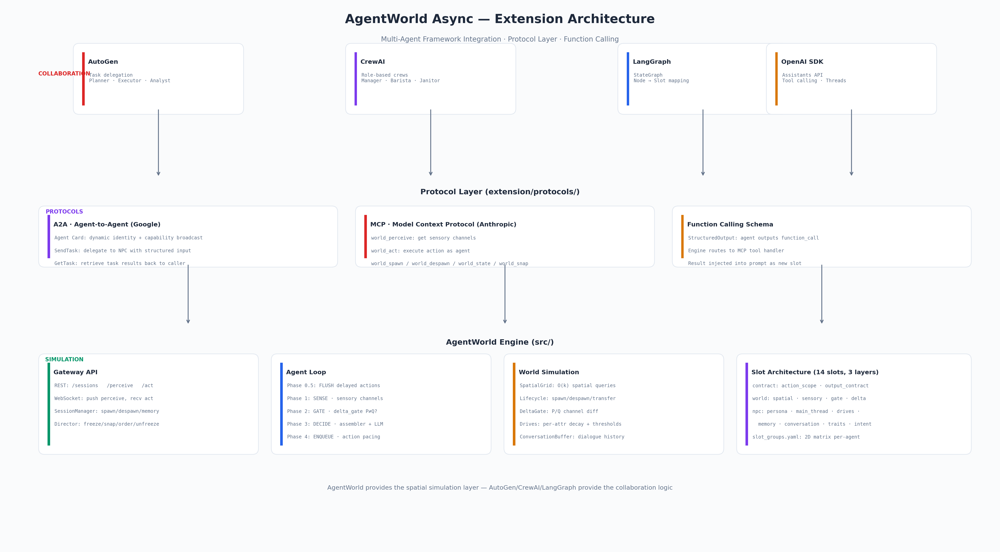
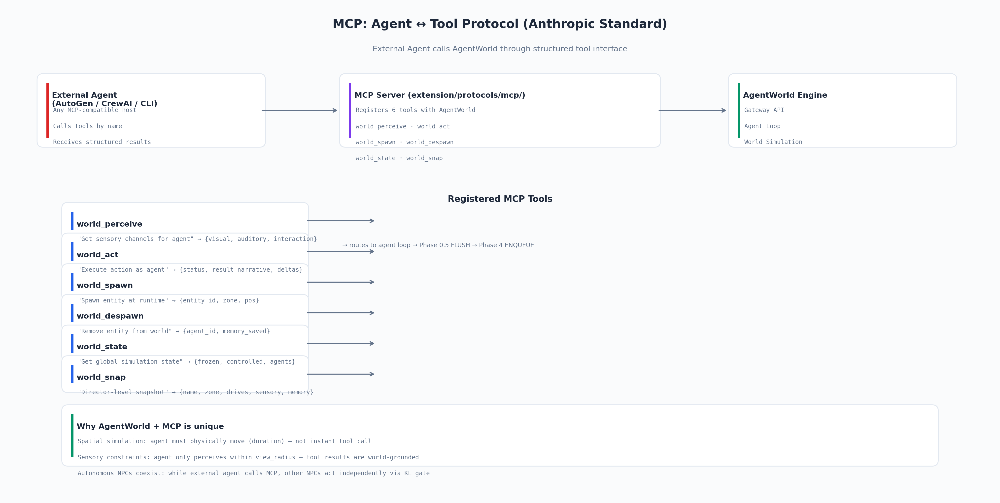
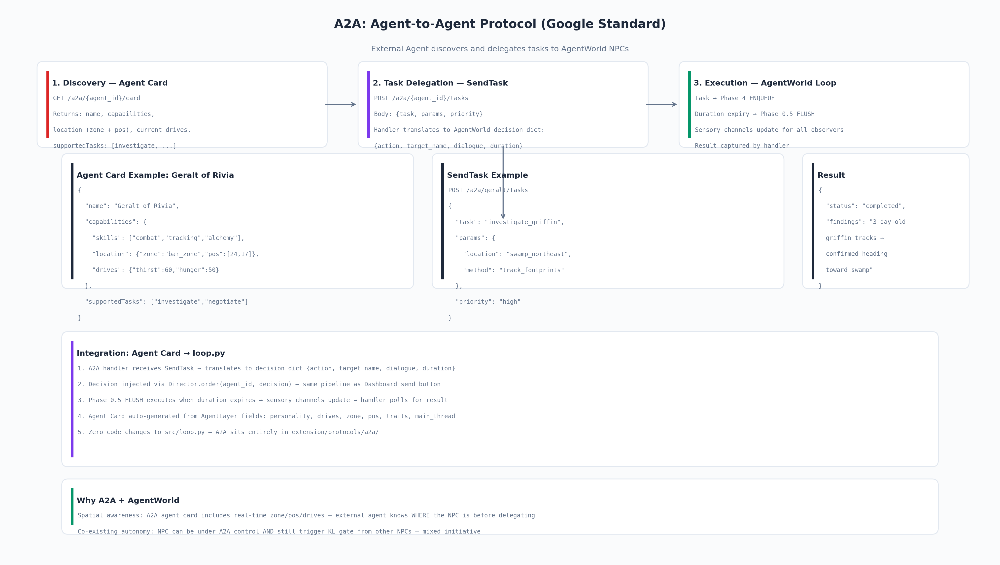

AgentWorld Async — 扩展层架构
将 AgentWorld 从自主仿真引擎转化为生产级多 Agent 协作平台
标准协议 · 框架适配 · Function Calling · 端到端用例

总览
核心定位：AgentWorld 不是 AutoGen/CrewAI/LangGraph 的竞品，而是它们缺失的物理层。AutoGen 决定谁做什么——AgentWorld 决定在哪个位置、花多长时间、谁能看到。
🔌 标准协议
MCP（工具调用）、A2A（Agent间通信）——任何兼容的框架都能通过标准协议接入 AgentWorld 世界
🔗 框架适配
AutoGen、CrewAI、LangGraph 三套适配器——把每个框架的概念映射到 AgentWorld 的原语
🧰 能力扩展
Function Calling Schema——NPC 不只是"走向吧台"，还能调用外部 API、查询数据库
独立性保证：
extension/ 目录删除后，src/ 零影响——AgentWorld 仍然作为独立仿真引擎运行。
三层架构
┌──────────────────────────────────────────────────────────────┐
│ 协作层 · COLLABORATION LAYER │
│ AutoGen · CrewAI · LangGraph · OpenAI SDK │
│ 任务委派 · 工作流 · 角色分配 · 工具调用 │
├──────────────────────────────────────────────────────────────┤
│ 协议层 · PROTOCOL LAYER (extension/protocols/) │
│ A2A: Agent Card · SendTask · GetTask │
│ MCP: world_perceive · world_act · world_spawn · world_snap │
├──────────────────────────────────────────────────────────────┤
│ 仿真层 · SIMULATION LAYER (src/) │
│ SpatialGrid · SensorySystem · DeltaGate · Drives │
│ 14 YAML Slots · Per-Agent Traits · Intent Context │
│ Gateway API · Director · Dashboard · SessionManager │
└──────────────────────────────────────────────────────────────┘MCP · Agent ↔ Tool（Anthropic 标准）
角色：外部 Host（CLI/IDE/其他Agent）把 AgentWorld 当作一个工具集来调用。Host 不需要了解 AgentWorld 内部——它只看到一个扁平的 tool 列表。

注册的 6 个 MCP Tool
| Tool 名 | 描述 | 返回值 |
|---|---|---|
world_perceive | 获取 Agent 的感官通道 | {visual, auditory, interaction} |
world_act | 执行一个动作 | {status, narrative, deltas} |
world_spawn | 运行时创建实体 | {entity_id, zone, pos} |
world_despawn | 从世界移除实体 | {agent_id, memory_saved} |
world_state | 全局仿真状态 | {frozen, controlled, agents} |
world_snap | Director 级快照 | {name, zone, drives, sensory, memory} |
调用示例
▶
1. 发现工具列表
# MCP Client 发送
list_tools()
# 返回
[world_perceive, world_act, world_spawn, world_despawn, world_state, world_snap]2. 执行动作
# 调用
world_act(agent_id="geralt", decision={
"action": "走向吧台，跟酒馆老板打听狮鹫的事",
"dialogue": "听说郊外有狮鹫？悬赏多少？",
"target_name": "酒馆老板",
"duration": 5
})
# 返回
{
"status": "ok",
"narrative": "杰洛特走到吧台前，酒馆老板正擦着杯子...",
"deltas": {"geralt": {"social": -5, "mood": 3}}
}3. 获取感知
# 调用
world_perceive(agent_id="geralt")
# 返回
{
"visual": [
{"name": "酒馆老板", "distance": 2, "look": "矮人老店主擦着吧台"},
{"name": "维瑟米尔", "distance": 5, "look": "灰白胡子的老猎魔人"}
],
"auditory": [
{"name": "丹德里恩", "speech": "来一首新歌！"}
]
}
为什么 AgentWorld + MCP 独特：
· 空间约束是真实的。world_act 不会传送——AgentWorld 计算距离、时间、Gate 穿越
· 感官反馈是环境的。world_perceive 只返回 agent 在 view_radius 内实际看到的内容
· 自主 NPC 共存。一个 agent 在 MCP 控制下时，其他 NPC 通过 KL gate 自主行动
· 空间约束是真实的。world_act 不会传送——AgentWorld 计算距离、时间、Gate 穿越
· 感官反馈是环境的。world_perceive 只返回 agent 在 view_radius 内实际看到的内容
· 自主 NPC 共存。一个 agent 在 MCP 控制下时，其他 NPC 通过 KL gate 自主行动
A2A · Agent ↔ Agent（Google 标准）
角色：外部 Agent 发现 AgentWorld 中的 NPC 并委派任务。和 MCP 不同——A2A 把每个 NPC 当作独立 agent，有自己的身份卡片。

三步流程
1发现
GET /a2a/{agent_id}/card
返回 Agent Card：名字、能力、位置、欲望值、支持的 task 类型
2委派
POST /a2a/{agent_id}/tasks
Body: {task, params, priority} → Handler 翻译为 decision dict → 注入 Agent Loop
3执行
Phase 4 ENQUEUE → duration → Phase 0.5 FLUSH
Phase 4 ENQUEUE → duration → Phase 0.5 FLUSH
动作到期执行 → 感官更新 → 所有观察者看到变化 → Handler 返回结果
Agent Card 示例 — 杰洛特
{
"name": "利维亚的杰洛特",
"capabilities": {
"skills": ["combat", "tracking", "alchemy"],
"location": {"zone": "bar_zone", "pos": [24, 17]},
"drives": {"thirst": 60, "hunger": 50, "mood": 50}
},
"supportedTasks": ["investigate", "negotiate", "combat"],
"url": "http://localhost:8766/a2a/geralt"
}
Agent Card 自动生成：每个 NPC 的卡片从
AgentLayer 字段动态生成——不手动维护。NPC 移动区域 → 卡片自动更新。NPC 的欲望值变化 → 卡片实时反映。
SendTask 示例
POST /a2a/geralt/tasks
{
"task": "investigate_griffin",
"params": {
"location": "swamp_northeast",
"method": "track_footprints"
},
"priority": "high"
}AutoGen 集成
场景：一个 AutoGen 团队（Planner、Executor、Analyst）协作调查白果园的狮鹫出没事件。
概念映射
| AutoGen 概念 | AgentWorld 等价物 |
|---|---|
AssistantAgent | 通过 Director/A2A 的外部控制 |
GroupChat | conversation_buffer + sensory channels |
ToolAgent | MCP world_perceive / world_act |
task.result() | A2A GetTask——NPC 完成动作后返回 |
完整流程
# AutoGen Planner 决定调查策略
Planner: "狮鹫出没白果园。分三路——Executor 找杰洛特问酒馆，
Analyst 查公告板，Critic 评估风险。"
# Executor 通过 A2A 委派给杰洛特
POST /a2a/geralt/tasks
{task: "ask_innkeeper_about_griffin", params: {...}}
# AgentWorld 执行——杰洛特走向吧台 (duration 5s)
# → 维瑟米尔在旁听到对话 → KL gate 触发 → 自主加入讨论
# → 酒馆老板提到"沼泽东北角有足迹"
# Executor 收到结果 → 反馈给 Planner
# Planner: "杰洛特得到线索。下一步让 Analyst 分析足迹数据。"
# → Analyst 通过 MCP world_snap(monster_tracks) 获取足迹实体状态
AgentWorld 的价值：杰洛特不是"瞬间获得线索"——他走过去需要 5 秒。维瑟米尔自己听到对话后加入——不在 AutoGen 脚本里。AutoGen 只管"分配任务"——AgentWorld 管谁在附近、谁听见、行动花多久。
CrewAI 集成
场景：CrewAI 管理 Central Perk 咖啡店——Gunther（经理）、Rachel（咖啡师）、Chandler（清洁工）。
概念映射
| CrewAI 概念 | AgentWorld 等价物 |
|---|---|
Agent（带角色） | 通过 Director 控制的 NPC |
Task | 通过 A2A 注入的编排动作 |
Crew | A2A task queue + Agent Cards |
| 自主 NPC | KL gate 驱动的 NPC（不在 CrewAI 管理下） |
混合控制模式
# CrewAI 管理 Rachel 和 Chandler
Manager (Gunther): "今天人多。Rachel 负责端咖啡，Chandler 清理桌子。"
# Rachel 通过 MCP 执行:
world_act("rachel", {action: "给三号桌端咖啡", duration: 5})
# 同时——AgentWorld 的自主 NPC 仍然运行:
# Joey: "有没有吃的？"（KL gate 自主触发）
# Phoebe: 弹 Smelly Cat
# Ross: 追 Rachel 聊恐龙
# Gunther 通过 world_perceive 看到全局:
world_perceive("gunther") → {visual: [Rachel在端咖啡, Ross在追Rachel, Joey在翻冰箱]}
# Gunther (CrewAI Manager): "Ross 在影响 Rachel 的工作效率。我去处理。"
AgentWorld 的价值：CrewAI 不需要管理 Joey/Phoebe/Ross——它们在 AgentWorld 里自主运行。CrewAI 的 Manager 通过
world_perceive 看到这些自主 NPC 的状态——然后决定是否干预。混合控制。
LangGraph · SVA 映射（论文级）
这不是 "集成 AgentWorld 到 LangGraph"——这是证明 AgentWorld 的 Slot Vector Architecture 设计哲学可以在任何状态机框架上独立重实现。论文价值最高。
Slot → StateGraph 映射
| LangGraph 概念 | AgentWorld SVA 等价物 |
|---|---|
StateGraph | prompts.yaml 模板 + slot list |
Node | 单个 slot（渲染 safe_format 模板） |
ConditionalEdge | slot condition: 字段 |
拓扑顺序 | Slot 排列顺序（注意力优先级） |
Checkpoint | snapshot_p()（P-distribution 快照） |
# AgentWorld YAML:
slots:
- main_thread # condition: main_thread
- persona # condition: name
- delta_gate # condition: delta_text
# LangGraph 等价:
class SlotStateGraph(StateGraph):
node_main_thread = Node(render_main_thread)
node_persona = Node(render_persona)
node_delta = Node(render_delta)
graph.add_conditional_edges(
START,
lambda state: "main_thread" if state.main_thread else "skip",
{"main_thread": node_main_thread, "skip": node_persona}
)Function Calling Schema
角色：让 AgentWorld NPC 能够调用外部工具——不再仅限于世界内的实体交互。
新增输出字段
{
"function_call": {
"name": "query_weather",
"params": {"city": "Novigrad", "days": 3}
}
}数据流
Agent 决策 → function_call 输出
│
▼
Agent Loop Phase 4 检测到 function_call
│
▼
→ 路由到 MCP tool handler（如果匹配）
→ 执行 tool
→ 结果注入 agent 的 prompt（新 slot: function_result）
│
▼
下一轮：agent 在 prompt 中看到 tool 的返回结果 → 决策下一步
设计要点：引擎不解释 tool 结果。结果作为原始文本注入——agent 自主判断如何使用。这符合 "引擎报告事实，LLM 判断" 的设计哲学。
用例一：猎魔人调查（AutoGen + A2A）
⏱ 0s AutoGen Planner: "狮鹫出没白果园。Executor 找杰洛特问酒馆。"
⏱ 0.5s → POST /a2a/geralt/tasks {task: "ask_innkeeper"}
⏱ 1s AgentWorld: 杰洛特走向吧台 (duration 5s)
⏱ 3s 维瑟米尔 KL gate 触发 → 自主走向草药架（不在 AutoGen 脚本里）
⏱ 6s 杰洛特到达吧台 → 和酒馆老板对话
→ "狮鹫？公告板上有委托。沼泽东北有足迹。悬赏500金币。"
⏱ 8s → A2A 返回结果 → AutoGen Analyst 分析
⏱ 10s AutoGen Executor: "让 Analyst 用 MCP world_snap(monster_tracks)"
→ 确认足迹"三天前，方向指向沼泽"
⏱ 12s Planner: "两路并行——杰洛特去沼泽，维瑟米尔调剑油。"
⏱ 12.5s → POST /a2a/geralt/tasks {task: "track_griffin"}
→ POST /a2a/vesemir/tasks {task: "prepare_oils"}
⏱ 20s Planner: "全员就位。等待报告。"用例二：咖啡店管理（CrewAI + MCP）
⏱ 0s CrewAI Manager (Gunther): "客流高峰。Rachel 端咖啡，Chandler 擦吧台。"
⏱ 0.5s → MCP world_act(rachel, {action: "给三号桌端咖啡", duration: 5})
⏱ 0.5s → MCP world_act(chandler, {action: "擦吧台蒸汽嘴", duration: 4})
⏱ 2s AgentWorld 自主事件:
Joey: KL gate 触发 → "有没有吃的？" → 走向 Monica（不在 CrewAI 管理下）
Ross: 走向 Rachel → "你今天发型不错"
⏱ 4s Gunther → world_perceive("gunther")
→ 看到: {Rachel 在三号桌, Ross 在追 Rachel, Joey 在翻冰箱}
⏱ 5s Gunther (Manager): "Ross 干扰 Rachel。"→ world_act(gunther, {action: "提醒 Ross 不要打扰员工", target_name: "Ross"})
⏱ 8s Crew 日常结束。所有 agent 恢复自主模式。用例三：跨世界 Agent 迁移
# 杰洛特从"猎魔人世界"迁移到"老友记世界"
⏱ 0s 猎魔人世界 → world_despawn("geralt") → 保存 memory 到磁盘
⏱ 1s 老友记世界 → world_spawn(geralt_entity_def)
→ SessionManager 恢复之前的 memory
→ 杰洛特出现在 Central Perk
⏱ 3s Central Perk 的 NPC 看到新来的人:
Rachel: 👁 visual → "白发男人，背着两把剑，脸上有疤"
Phoebe: 👁 visual → "这人的 aura 很特别，像是来自别的世界"
Gunther: "先生，我们这里不提供麦酒。"
⏱ 5s 杰洛特: KL gate 触发 → "这是什么地方？我在哪？"
→ main_thread: "搞清楚这是哪里，找到回去的路"实施状态 & 优先级
| 组件 | 状态 | 优先级 |
|---|---|---|
extension/README.md | ✅ 完成 | — |
extension/ARCHITECTURE.md | ✅ 完成 | — |
extension/img/（3 张图） | ✅ 完成 | — |
MCP Server（protocols/mcp/server.py） | 📋 设计完成 | P0 |
A2A 协议（protocols/a2a/） | 📋 设计完成 | P0 |
| Function Calling Schema | 📋 设计完成 | P1 |
| AutoGen 集成 + Demo | 📋 设计完成 | P1 |
| CrewAI 集成 + Demo | 📋 设计完成 | P1 |
| LangGraph SVA 映射 | 📋 设计完成 | P2 |
| 端到端用例文档 | 📋 设计完成 | P2 |
下一步：实现 MCP Server——范围最小、即时可用（任何 MCP 兼容的 Host 都能调用）。然后是 Function Calling Schema——让 AgentWorld NPC 能调用外部 API。之后是 AutoGen Demo——最有演示价值。